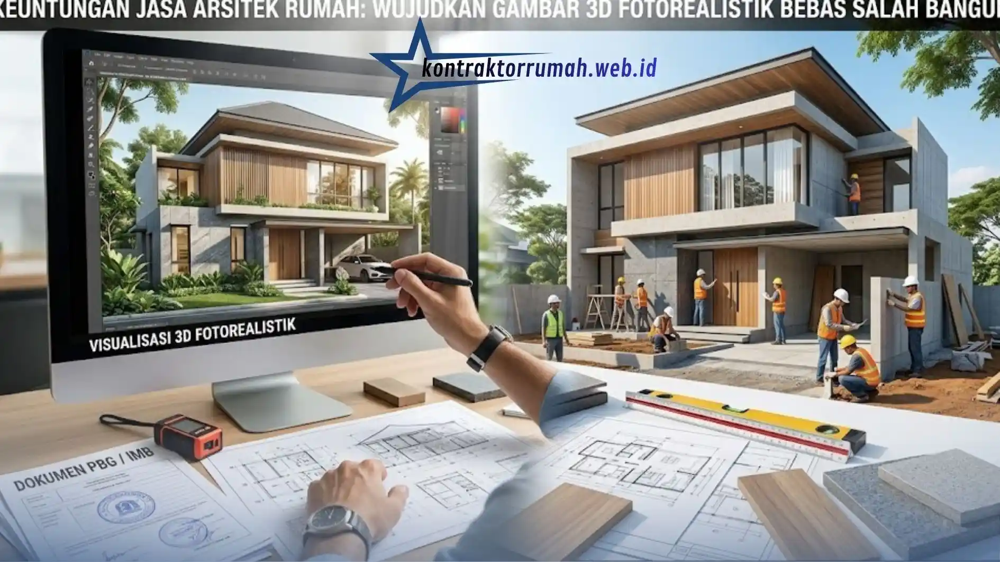
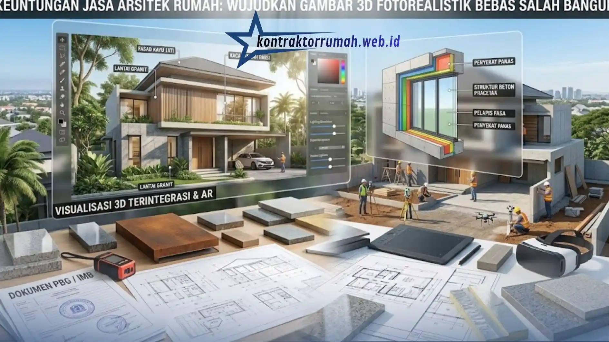

Keuntungan Jasa Arsitek Rumah: Wujudkan Gambar 3D Fotorealistik Bebas Salah Bangun
 Anggun Tri Stya
|
22 Agustus 2026
|
Waktu baca: 7 Menit
Anggun Tri Stya
|
22 Agustus 2026
|
Waktu baca: 7 Menit

Kontraktor Rumah (kontraktorrumah.web.id) menghadirkan jasa arsitek rumah berpengalaman untuk memetakan desain impian Anda ke dalam gambar teknis yang akurat, sebelum satu bata pun diletakkan. Dengan pendekatan ini, risiko bongkar pasang akibat kesalahan konstruksi dapat ditekan sejak tahap perencanaan.
Membangun rumah bukan sekadar menumpuk material di atas lahan kosong — ia adalah proses menerjemahkan mimpi menjadi ruang yang bisa dihuni, dirasakan, dan dibanggakan. Sayangnya, banyak pemilik rumah yang terjun langsung ke lapangan tanpa gambar kerja yang matang, dan berakhir dengan biaya membengkak karena revisi di tengah jalan. Di sinilah peran jasa arsitek rumah menjadi krusial: bukan sekadar "tukang gambar", melainkan arsitek pengalaman ruang yang menerjemahkan kebutuhan fungsional menjadi karya visual sekaligus dokumen teknis yang bisa dieksekusi kontraktor tanpa multitafsir.
Ringkasan Inti
- Gambar 3D fotorealistik menjembatani kesenjangan antara imajinasi klien dan realitas fisik bangunan
- Gambar kerja terintegrasi mencegah biaya bongkar pasang yang bisa menghabiskan 10–20% anggaran total
- Perhitungan cross ventilation dan sun shading membuat rumah sejuk tanpa bergantung penuh pada AC
- Visualisasi material fotorealistik mengurangi risiko kekecewaan setelah material terpasang permanen
- Gambar arsitektur lengkap menjadi syarat wajib pengajuan PBG (pengganti IMB)
Daftar Isi
- 1. Mengapa Gambar 3D Arsitektur Sangat Penting Sebelum Membangun?
- 2. Menghindari Salah Konstruksi Fisik (Cegah Bongkar Pasang)
- 3. Efisiensi Pencahayaan & Penghawaan Alami
- 4. Visualisasi Material Riil (Kayu, Granit, Beton Ekspos)
- 5. Dokumen Kerja untuk Syarat IMB / PBG
- 6. Cara Memilih Studio Jasa Arsitek Rumah Terbaik
1. Mengapa Gambar 3D Arsitektur Sangat Penting Sebelum Membangun?
Gambar 3D bukan sekadar pemanis presentasi. Ia adalah alat komunikasi paling jujur antara imajinasi klien dan realitas fisik bangunan. Denah dua dimensi kerap menyulitkan orang awam membayangkan skala ruang, tinggi plafon, atau bagaimana cahaya matahari pagi jatuh di ruang keluarga. Visualisasi fotorealistik menjembatani kesenjangan ini — setiap sudut, tekstur dinding, hingga bayangan pepohonan dapat dilihat dan dievaluasi sebelum konstruksi dimulai.
Lebih dari estetika, gambar 3D berfungsi sebagai alat mitigasi risiko. Ketika klien, arsitek, dan kontraktor melihat objek yang sama secara visual, ruang untuk kesalahpahaman menyempit drastis. Perubahan desain yang biasanya baru terdeteksi saat dinding sudah berdiri, kini bisa dikoreksi di layar komputer — jauh lebih murah, jauh lebih cepat.
2. Menghindari Salah Konstruksi Fisik (Cegah Bongkar Pasang)
Kesalahan konstruksi — kolom yang salah posisi, bukaan jendela yang tidak sesuai proporsi ruang, atau tangga yang terlalu curam — hampir selalu berakar dari gambar kerja yang tidak lengkap. Jasa arsitek rumah menyusun gambar detail arsitektur, struktur, dan mekanikal elektrikal secara terintegrasi, sehingga tukang di lapangan bekerja berdasarkan acuan yang presisi, bukan interpretasi lisan yang mudah berubah. Hasilnya, biaya bongkar pasang yang seringkali menghabiskan 10–20% anggaran total dapat dihindari sejak awal.
3. Efisiensi Pencahayaan & Penghawaan Alami
Arsitek profesional memahami orientasi matahari, arah angin, dan pola bayangan sepanjang tahun — bukan sekadar meletakkan jendela demi estetika. Perhitungan bukaan cross ventilation dan sun shading yang tepat membuat rumah tetap sejuk tanpa bergantung sepenuhnya pada AC, sekaligus menekan konsumsi listrik jangka panjang. Simulasi pencahayaan dalam gambar 3D memungkinkan klien melihat langsung bagaimana cahaya alami mengisi ruang pada pagi, siang, dan sore hari sebelum desain difinalisasi.

4. Visualisasi Material Riil (Kayu, Granit, Beton Ekspos)
Salah satu keunggulan gambar 3D fotorealistik adalah kemampuannya menampilkan tekstur material senyata mungkin — serat kayu jati, urat granit, hingga kesan kasar beton ekspos yang sedang digemari desain kontemporer. Klien tidak perlu lagi membayangkan dari sampel kecil di toko material; mereka bisa melihat bagaimana kombinasi material tersebut tampil dalam skala penuh dan pencahayaan ruang sesungguhnya. Ini mengurangi risiko kekecewaan setelah material terpasang secara permanen.
5. Dokumen Kerja untuk Syarat IMB / PBG
Di balik keindahan visual, gambar arsitektur dari jasa profesional juga berfungsi sebagai dokumen legal. Gambar kerja yang disusun sesuai kaidah teknis menjadi syarat wajib pengajuan Persetujuan Bangunan Gedung (PBG), pengganti IMB pasca-regulasi terbaru. Tanpa dokumen yang memenuhi standar — lengkap dengan denah, tampak, potongan, dan spesifikasi struktur — proses perizinan bisa tertunda berbulan-bulan, bahkan berisiko ditolak oleh dinas terkait.
6. Cara Memilih Studio Jasa Arsitek Rumah Terbaik
Memilih mitra arsitek sama pentingnya dengan memilih desain itu sendiri. Berikut beberapa aspek yang layak dipertimbangkan:
- Portofolio yang relevan dengan gaya hunian Anda — perhatikan apakah studio memiliki pengalaman pada tipe rumah serupa: minimalis, tropis kontemporer, atau klasik modern
- Kejelasan proses kerja dan timeline — studio profesional biasanya memiliki tahapan jelas: konsep, pengembangan desain, gambar kerja, hingga pengawasan
- Kemampuan visualisasi 3D fotorealistik — pastikan tim mampu menghadirkan rendering yang mendekati kondisi nyata, bukan sekadar sketsa dasar
- Transparansi estimasi anggaran — arsitek yang baik akan membantu menyusun perkiraan biaya sejak tahap desain, bukan setelah konstruksi berjalan
- Layanan purna desain — idealnya, studio juga dapat mendampingi hingga tahap pengurusan PBG dan koordinasi dengan kontraktor pelaksana
Kontraktor Rumah hadir dengan pendekatan yang memadukan kelima aspek di atas dalam satu layanan terintegrasi, melayani wilayah Jabodetabek dengan tim arsitek dan drafter berpengalaman dalam menghasilkan gambar kerja sekaligus rendering fotorealistik siap presentasi.
Investasi pada jasa arsitek rumah bukanlah pengeluaran tambahan, melainkan langkah efisiensi yang menyelamatkan waktu, biaya, dan energi emosional sepanjang proses pembangunan. Dari pencegahan salah konstruksi, optimalisasi pencahayaan alami, visualisasi material yang jujur, hingga kelengkapan dokumen perizinan — semuanya bermuara pada satu tujuan: rumah yang dibangun sesuai rencana, tanpa kejutan di tengah jalan. Konsultasikan kebutuhan desain rumah Anda via WhatsApp 088989643555.